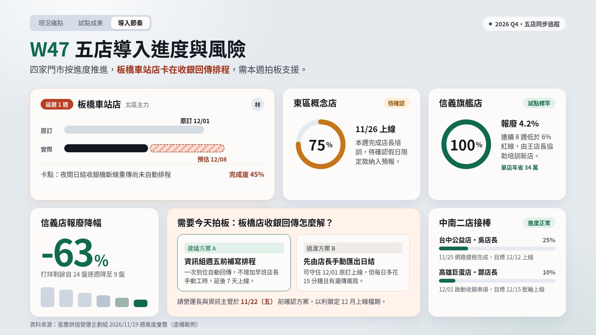
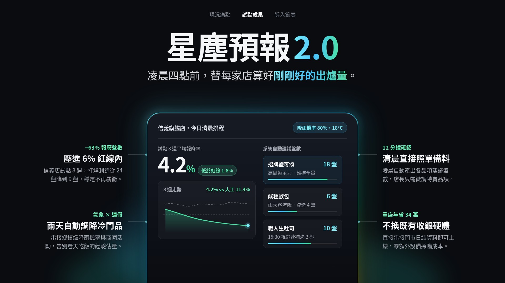
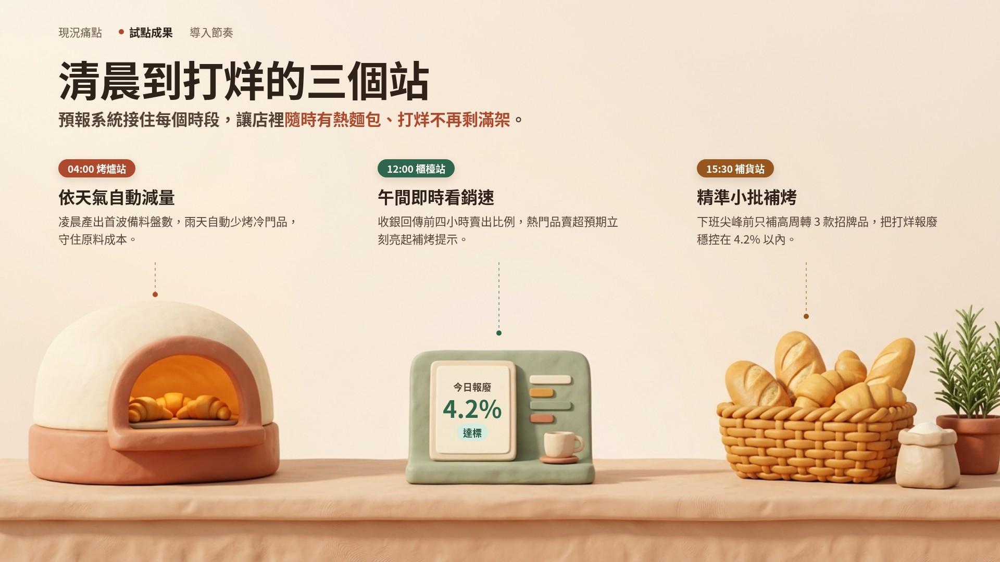
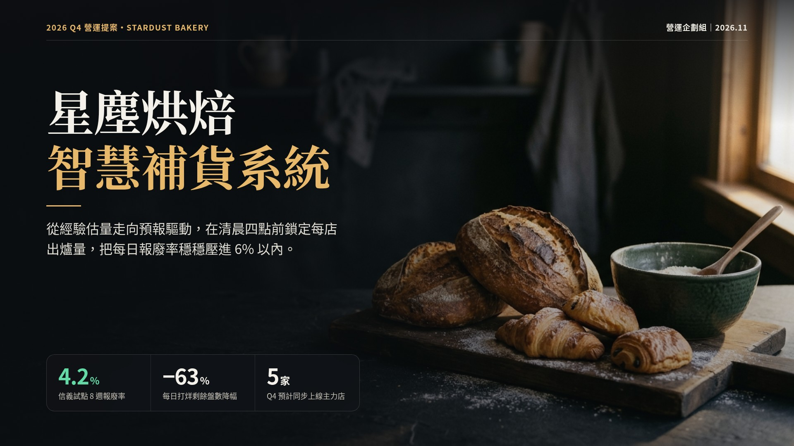
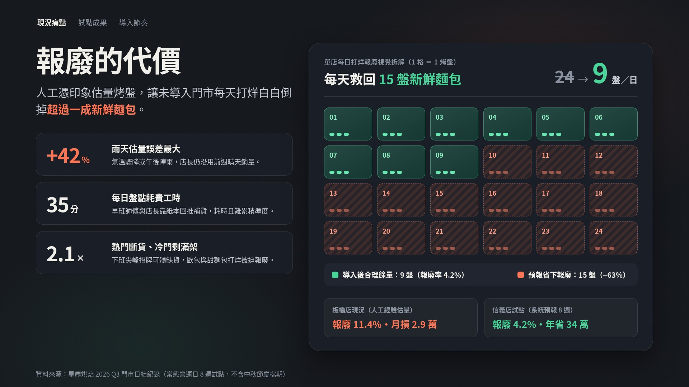
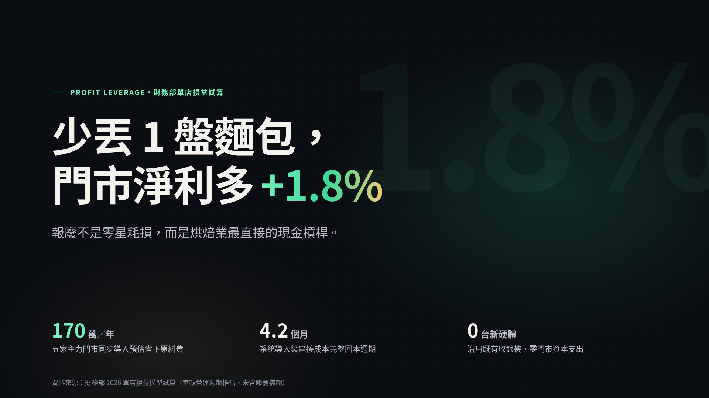

星塵烘焙・智慧補貨系統｜靜態美感上限重練標竿（6 頁）
上排：重做 Gate 2 三風格樣張（現代 Bento 工作款／Apple 實景深色舞台／真實 AI 3D 紙黏土＋HTML 真文字）；下排：關鍵頁型突破（AI 攝影雜誌封面／24 盤數據視覺矩陣／電影級震撼頁）。
徹底告別簡陋程式 SVG 與黑白表格；三張構圖、媒介與質感各自獨立

甘特延遲條＋圓環進度＋報廢降幅迷你圖＋決策選項卡，取代舊版黑白表格

雙層微光玻璃平板＋真實 8 週預報曲線與盤數進度條＋精準細線標註

無字 3D 手工黏土烘焙場景底圖，直接疊加可編輯真文字與螢幕即時數字
證明整份簡報不靠靜態模板堆字，每一頁都能有設計張力與層次

真實 AI 晨光烘焙攝影底圖＋出版物襯線大標＋左下毛玻璃三指標

24 格烤盤單位矩陣讓報廢降幅一眼看懂，搭紙紋深石板質感

點陣微光景深＋低透明巨數浮水印＋底部三柱財務支撐事實